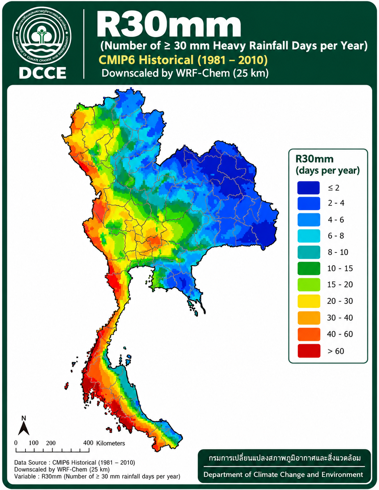
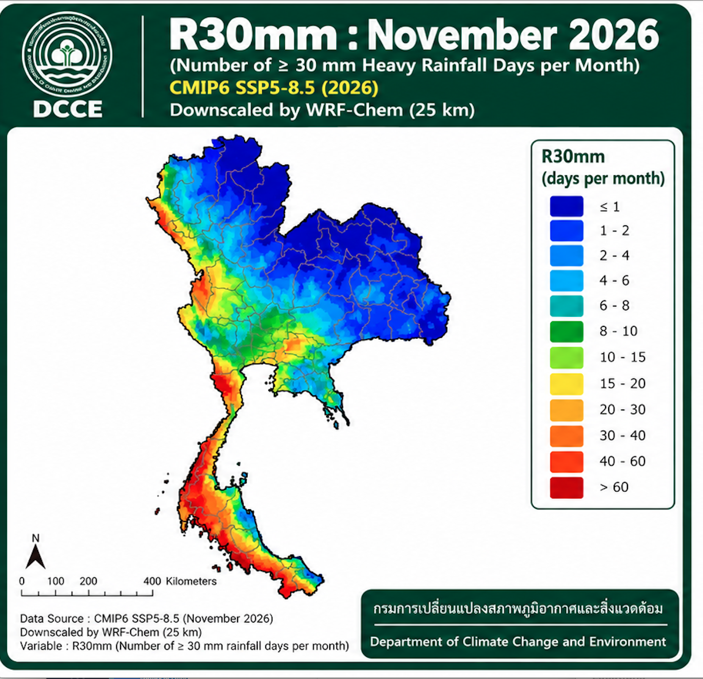
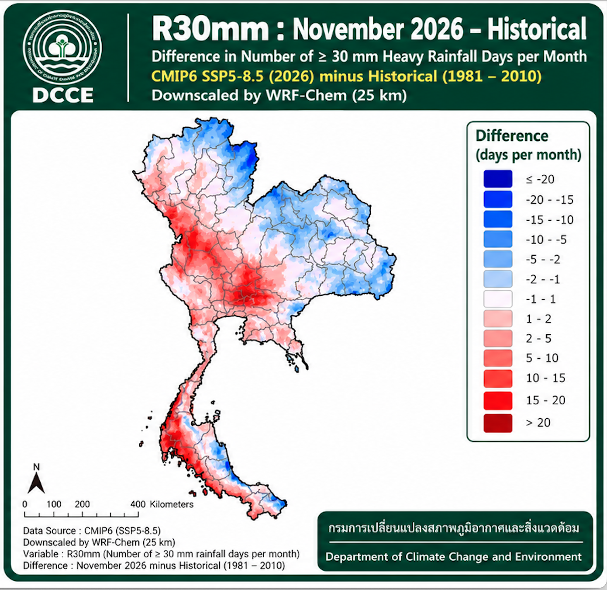

1
Historical (1981–2010)
ข้อมูลภูมิอากาศในอดีต

CMIP6 · SSP5-8.5 · Downscaled by WRF-Chem (25 km)
ข้อมูลภูมิอากาศในอดีต

ภาพฉายภายใต้สถานการณ์การปล่อยก๊าซเรือนกระจกสูง

ความแตกต่างจากช่วง Historical

แผนที่แสดงจำนวนวันที่ฝนตกตั้งแต่ 35 มม./วันขึ้นไปในเดือนพฤศจิกายนของช่วงอ้างอิง 1981–2010
ใช้เป็นฐานสำหรับการเปรียบเทียบกับภาพฉายภูมิอากาศ
แสดงผลการจำลองภายใต้สถานการณ์ SSP5-8.5 ซึ่งเป็นสถานการณ์การปล่อยก๊าซเรือนกระจกสูง
ผลดังกล่าวไม่ใช่การพยากรณ์ฝนสำหรับเดือนพฤศจิกายน 2026
เปรียบเทียบจำนวนวันฝนตกหนักระหว่างภาพฉายและช่วงอ้างอิง โดยตีความสีและค่าตาม legend ในแผนที่ต้นฉบับ
การระบุชื่อจังหวัดหรือภูมิภาคต้องอ้างอิงการวิเคราะห์ข้อมูลจริงเพิ่มเติม